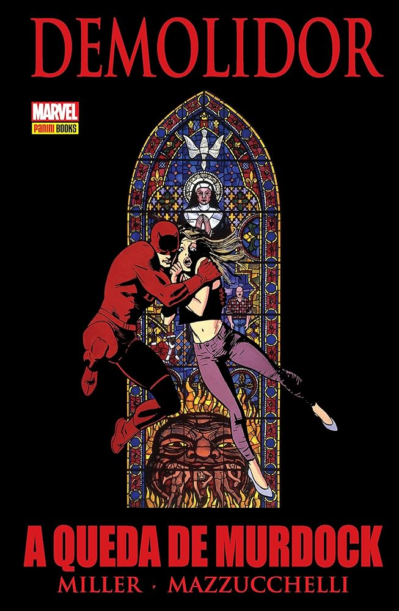

Bem-vindo ao site sobre a icônica HQ "Demolidor: A Queda de Murdock"
Aqui você encontrará informações sobre os autores Frank Miller e David Mazzucchelli, uma introdução à HQ e os principais pontos que fazem desta obra uma referência nos quadrinhos.
